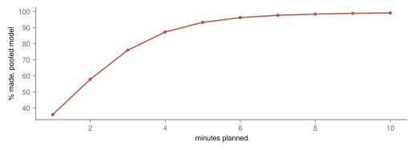
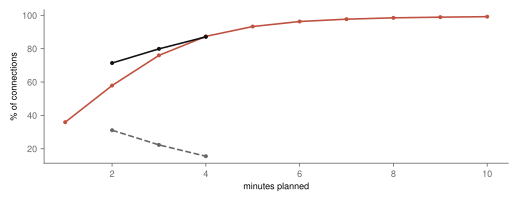
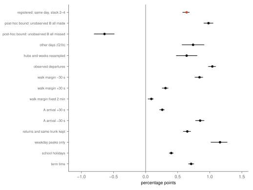
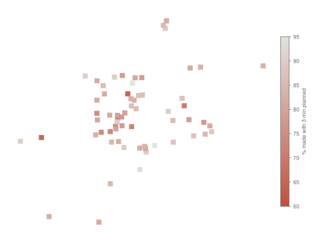

Research · Running late, part 3 · Prague tram transfers, 2025
Will you make your tram connection?
Planned three minutes apart, 80 % of connections were made, and the delays of the two lines moved together only slightly, about +0.6 percentage points, which does not support the expectation.
- made, planned 3 min apart
- 80 % 78.4–80.3 % if the 1.9 % with an unobserved planned tram were all missed or all made
- lines late together, same day
- +0.64 pp 95 % CI +0.58 to +0.68, bootstrap by week (26 weeks) · not supported
- bounds, unobserved planned tram
- −0.64 to +0.98 pp after the results: the 1.6 % of connections with no observed planned tram set to missed or made
- connections read
- 5.0 million count · planned 2–4 min apart at 110 stops, 170 days
Overwhelmed? Here's the short version
- The share made rises steeply with the slack: 71 % of connections planned two minutes apart were made, 87 % at four minutes, and 22 % of those planned three minutes apart cost over five minutes of extra wait.
- The registered effect is small but its size depends on how it is measured: from +0.1 pp with a fixed two-minute walk to +1.2 pp in the weekday peaks. By the same rule the peaks alone would read "supported" and observed departures "inconclusive".
- Pairs of lines differ for real: 47.6 % of 970 line pairs have an interval that excludes zero, from −6.5 to +9.9 pp, so the pooled figure does not describe any single pair.
- The design does not identify what produces the association; a tram blocking the next one on shared track, a dispatcher holding a tram, or timing errors shared by the feed would each produce it.
- The roulette covers 6 624 of 238 683 cells at 56 of 111 stops; its curve fitted on long connections predicts the short ones within 1.0 pp, a test added after the results.
Photo: ŠJů · CC BY-SA 3.0, toned

The question
If you have ever changed trams at a busy stop like Anděl, you know the drill. The timetable gives you a few minutes to get off, cross to another platform and catch a different line. Whether you make it depends on how late each of the two trams runs that day. If you miss it, you wait for the next one.
A change of trams costs more than the minutes it takes. Studies have priced it in equivalent minutes of riding4, and transit manuals count reliability as part of the quality of service that travellers experience5.
This part of the series asks how often Prague's tram connections held in 2025. Its registered question, fixed before the results, is whether the delays of the two lines move together. Imagine the same street or the same disruption holding up both trams. A late arrival then meets a late departure, and the connection survives more often than two unrelated delays would allow.
Data
The trams are the ones from the author's thesis. They come from Prague Integrated Transport's stop-time history on Golemio2, a record of when each tram reached each stop, from 15 March to 8 September 20251. The earlier studies' screening of planned closures and gaps in the data feed was applied, leaving 170 days in all. Platforms and their positions come from the PID timetable data3.
Only stops served by at least four tram lines count. There are 111 of them, from large interchanges such as Anděl and I. P. Pavlova to busy stops on shared routes.
Over the season the timetable planned 19.1 million connections with up to ten minutes of slack, the planned gap between one tram arriving and the other leaving. Of these, 5.6 million were two to four minutes apart. Returns and same-street pairs, 46 million of them, were left out. A line that turns back the way the first one came, or runs on along the same street, is not a transfer anyone needs.
On a given day about 3.3 % of the trips the timetable usually runs in an hour were missing, cancelled or not tracked. One stop, Zborovská, was left out of the main estimate. One of its 11 observed departures left more than half a minute early, over the 5 % that the rule set in advance allowed.
How this was done
A connection is an arrival of one line (A) at a stop and the first departure of another line (B) from the same stop name at least a walking margin later. The margin is a minute to get off and orient, an allowance chosen by the author, plus the straight-line distance between the two platforms at 1.2 metres a second, at the slow end of observed walking speeds. Field studies put the 15th-percentile speed of pedestrians under 65 at 1.25 m/s and recommend 1.22 m/s for design, though many people over 65 walk slower (their 15th percentile was 0.97 m/s)6. The slack is the scheduled time between A's arrival and B's departure. B is taken to leave at a stand-in, the later of its observed arrival and its scheduled departure (dep_hat), because departures were observed for only part of the passes and trams at these stops almost never left early. The stand-in ignores the time a tram stands at the stop after arriving, so it puts B's departure too early. Where the planned tram's departure was observed, it left a median of 38 seconds after the stand-in, and 86.8 % of those connections were made on observed departures against 80.1 % on the stand-in, so the stand-in lowers the share made, for the planned tram and for the donors alike. A connection is made when dep_hat is at least the margin after A's observed arrival.
The registered estimand is the co-movement, Δp_within: the share of connections planned 2–4 minutes apart that were made (p_obs), minus the share made when each A arrival is set against the other B trips of the same line on the same day within an hour of the planned one, moved to the planned time so the slack stays the same. That benchmark keeps the day's conditions and breaks the link between the two particular trams. The difference is in percentage points (pp). Intervals are 95 % confidence intervals (CI) from a bootstrap that resamples whole ISO weeks (26 weeks, 999 draws), so the effective sample is 26 weeks, not millions of connections. p_obs counts only connections whose planned B was present and observed. The 4 983 629 connections of the estimate are fewer than the 5 065 634 with same-day donors, because cancelled or untracked planned trams fall out, which may make p_obs look more reliable than the timetable was. A secondary estimand, Δp_day, takes B's lateness from the same scheduled trip on other days, which breaks the link through the day's weather and disruptions as well. The screen, from counts alone, set the smallest detectable co-movement at 3.0 points, deliberately conservative. It used the worst-case variance of a share and ignored that p_within is an exact average over many donors, which made it about forty times too pessimistic.
The tests
| Question | Registered rule | Result | Label |
|---|---|---|---|
| Q1 · co-movement within the day, slack 2–4 min | supported if the 95 % CI lies above +1 pp; not supported if the 90 % CI lies within ±1 pp | +0.64 pp 95 % CI +0.58 to +0.68 · 90 % CI +0.59 to +0.68 · 4 983 629 connections, 26 weeks | not supported |
| Q1b · co-movement including the day | the same | +0.74 pp 95 % CI +0.57 to +0.91 · 141 696 connections with donors on other days | not supported |
| Q2–Q4 · cost of a tight transfer, the roulette, where misses come from | descriptive, no label | below | descriptive |
The roulette: share made by stop, lines and slack
The roulette lets you look up a connection of your own. Each combination of stop, arriving line and direction, departing line and direction, and time of day is a cell. For each cell it gives the share of connections that would be made at a slack of 1 to 10 minutes.
The share is read off the cell's own record of relative lateness, how much later than planned the second tram ran compared with the first (B's lateness at departure minus A's at arrival). That way the connections the timetable plans 6 minutes apart also say how often the same pair would hold at 3.
A cell needs 500 connections on 30 days. Of 238 683 cells, 6 624 qualify, at 56 of the 111 stops. Together they hold about 77 % of the connections planned 2–4 minutes apart.
The figure opens on a typical cell, picked by a rule and not by its result. It is the cell with the median share made at 3 minutes among the 1 857 cells whose connections are timetabled 2–4 minutes apart. That cell is I. P. Pavlova, from line 11 towards Spořilov to line 6 towards Výstaviště, where 85 % were made at 3 minutes (rough 95 % interval 82–87 %). It falls in the weekday-peak band, so the figure first shows that time of day.

A test added after the results asks whether a cell's curve holds away from the slack the cell is timetabled at. The relative lateness was fitted on the connections planned five minutes or more apart. It was then used to predict the share made among those planned two, three and four minutes apart in the same cell. That assumes relative lateness does not depend on the planned slack.
The prediction came out a little high. Over all months it was 71.2, 80.6 and 87.4 % against 71.2, 79.6 and 86.7 % observed, for the 83 % of short connections whose cell had at least 30 long ones. The model overshoots by up to 1–2 pp, most in April–May alone (79.1 against 77.4 % at 3 minutes).
Only the step from long to short slack was tested. In the roulette, a 1-minute slack and 8–10-minute slacks for cells timetabled tighter remain untested guesses beyond the data (extrapolations). The in-sample calibration, where the curve is fitted on the same connections it is compared with (largest gap 0.45 points by decile), is close to true by construction and is not evidence.
How often connections were made
Connections planned with more time to spare were made more often, though these shares come without the error margins the design asked for. With two minutes planned, 71 % of connections were made. With three it was 80 %, and with four 87 % (fig. 2). On the pooled curve, read off all shown cells together, the share passes 95 % at about 6 minutes.
A miss costs the wait for the next tram of the line. A connection planned three minutes apart cost more than five minutes of extra wait 22 % of the time, with a median extra wait of 72 seconds. At two minutes it did so 31 % of the time. The extra wait counts any wait beyond the plan, so it also includes a planned tram that was caught but ran very late.
Split by time of day, connections planned three minutes apart were made 78 % of the time in the weekday peaks and 81 % in the rest of the weekday. On weekend days it was 82 %, and in the evening 81 %. These shares, by slack and by time of day, are point estimates without intervals, because the week-bootstrap intervals the design asked for were not computed.
The shares count only connections whose planned tram was observed. The design also asked for bounds that count the uncertain ones as all made or all missed, and for the shares with either tram's time shifted by half a minute. Both were left out of the first version and run after the results.
For connections planned three minutes apart, the planned tram was not observed in 1.9 % of cases. Setting all of those to missed, or all to made, puts the share between 78.4 and 80.3 %. The registered class, which also counts every connection in an hour when the line ran a trip short, gives 59.7 to 85.1 %.
Shifting A's arrival by ±30 seconds moves the share made at three minutes between 71.5 and 86.0 %. It moves the share costing over five minutes between 16.4 and 30.6 %.
Share of connections made, by minutes planned.

Co-movement of the two lines' delays
The two lines' delays moved together only slightly, by less than the margin set in advance, so the registered expectation is not supported.
The test compares two shares. Of the 4 983 629 connections planned two to four minutes apart, 80.7 % were made. Paired instead with other trips of the second line on the same day, the share would have been 80.0 %. That comparison keeps the day's conditions but breaks the link between the two particular trams.
The difference is +0.64 pp (95 % CI +0.58 to +0.68, 90 % CI +0.59 to +0.68). It is above zero but inside the ±1 point set in advance, so by the registered rule the prediction is not supported. Resampling stops as well as weeks widens the interval to +0.48 to +0.80.
A second comparison takes the second tram from the same scheduled trip on other days. It gives +0.74 pp (+0.57 to +0.91, not supported), on only 141 696 connections, 2.8 % of the total. So few qualify because it needs days on which the two lines ran exactly the same timetable at the stop.
How large the co-movement looks depends on how it is measured (fig. 3 and the robustness table). Every version of the measure, or specification, is positive. They range from +0.09 pp with the walk fixed at two minutes to +1.16 pp in the weekday peaks.
Shifting A's arrival 30 seconds later gives +0.26 pp, and 30 seconds earlier +0.85. A walk 30 seconds shorter gives +0.84, and scoring B on its observed departures +1.04.
Read by the same rule, the peaks would be "supported" (+1.02 to +1.27) and observed departures "inconclusive" (+0.98 to +1.09). These are checks and do not relabel the registered result. They do mean the co-movement is better described as about +0.6 pp with a specification range of +0.1 to +1.2 than as a single number.
The gap between the registered estimate and the observed-departure check is probably the stand-in. dep_hat ignores the time B stands at the stop. That lowers the share made for the planned tram and for its donors, the other trips it is compared with, but not by the same amount.
Pairs of lines differ more than the pooled figure suggests. Of the 970 line pairs at a stop with at least 500 connections, 47.6 % have a 95 % CI that excludes zero. Of the 86 stops, 62.8 % do. The pairs' estimates run from −6.5 to +9.9 pp.
These differences are far larger than the week-to-week sampling noise in each interval. So the pooled figure, a network share weighted by connections, does not carry over to any one pair of lines.
Bounds: −0.64 to +0.98 pp
For 1.6 % of the 5 065 634 connections with same-day donors the planned tram was not observed. Setting all of them to missed or all to made, and keeping every observed outcome, puts the co-movement between −0.64 pp (95 % CI −0.80 to −0.49) and +0.98 pp (95 % CI +0.91 to +1.05). These bounds were computed after the results.
Among observed connections, those in an hour when the line ran a trip short show +0.71 pp and the rest +0.61 pp. So the flagged hours do not carry a different co-movement.
The registered bounds, from −20.0 to +5.7 pp, also overwrite the 24.1 % of connections whose planned tram was observed but whose line ran a trip short in that hour. They throw away known outcomes. They are kept in the method but are not the right measure of the uncertainty.
For Q1b, no connection with an unobserved planned tram had donors on other days. A missing tram changes the day's timetable signature, so Q1b only sees days with fully tracked trams, and its post-hoc bounds equal the estimate by construction. That is a structural zero and not a finding. The registered ones run from −9.99 to +3.54 pp.
Co-movement under the registered estimate and each check, percentage points.

Where costly misses come from
A costly miss here is a connection planned two to four minutes apart that cost more than five minutes of extra wait. There were 1.2 million of them.
In 40 % of costly misses, the arriving tram was already later than the slack at the stop before the hub. In the other 59 % it was not. There the time went on the last segment, the stretch of track into the hub, or with a second tram that ran late. These records cannot tell the two apart.
Of the misses where the time was lost at the end, 20.8 % came in over one of the tenth of segments that part 1 found to produce the most delay. Across all costly misses the share was 18.1 %.
That is only a little more than for connections in general. As a baseline computed after the results, 16.6 % of all connections planned two to four minutes apart arrive over such a segment (18.1 % against 16.6 %). That describes where misses happen and does not show that those segments cause them.

Robustness
| Specification | Co-movement, pp | 95 % CI | Same rule would read |
|---|---|---|---|
| registered: same day, slack 2–4 min (999 draws) | +0.64 | +0.58 to +0.68 | not supported |
| stops resampled as well as weeks | +0.64 | +0.48 to +0.80 | not supported |
| other days instead of the same day (Q1b, 999 draws) | +0.74 | +0.57 to +0.91 | not supported |
| B on its observed departure | +1.04 | +0.98 to +1.09 | inconclusive |
| walk margin −30 s | +0.84 | +0.77 to +0.89 | not supported |
| walk margin +30 s | +0.31 | +0.26 to +0.35 | not supported |
| walk margin fixed at 2 min | +0.09 | +0.04 to +0.12 | not supported |
| A's arrival +30 s (= B −30 s) | +0.26 | +0.22 to +0.29 | not supported |
| A's arrival −30 s (= B +30 s) | +0.85 | +0.78 to +0.91 | not supported |
| returns and same-street pairs kept | +0.65 | +0.59 to +0.70 | not supported |
| weekday peaks only | +1.16 | +1.02 to +1.27 | supported |
| school holidays | +0.40 | +0.37 to +0.43 | not supported |
| term time | +0.71 | +0.67 to +0.75 | not supported |
| post-hoc: unobserved planned B all made | +0.98 | +0.91 to +1.05 | inconclusive |
| post-hoc: unobserved planned B all missed | −0.64 | −0.80 to −0.49 | not supported |
| post-hoc: observed, line ran a trip short that hour | +0.71 | +0.65 to +0.77 | not supported |
| post-hoc: observed, line not short | +0.61 | +0.56 to +0.66 | not supported |
Checks registered in §7 of the design use 199 bootstrap draws by week; the registered estimate uses 999. Rows marked post-hoc were added after the results. Shifting B's departure by +30 s gives the same numbers as shifting A's arrival by −30 s, and the reverse, because only the gap between the two enters. No check relabels the registered result.
What this means
For someone changing trams in Prague in 2025, a connection planned three minutes apart was made 80 % of the time. It cost more than five minutes of extra wait 22 % of the time.
The share made rose steeply with the slack, from 71 % at two minutes to 87 % at four.
The two lines' delays showed a small association, about +0.6 pp across the network, too small to support the registered expectation. Depending on how it is measured, it ranges from +0.1 to +1.2.
Pairs of lines differed much more than that, so for any one connection the pooled figure says little. The roulette's cell describes it, within its interval and coverage.
The design does not say what produces the association. A late tram physically blocking the next one at a shared platform or on shared track would produce it. So would a dispatcher holding a departing tram for an arriving one, or timing errors that the feed shares between vehicles.
Shared streets and junctions, the explanation the author expected, were not tested.
What this does not show
The connections here are possible ones. No traveller is followed from one tram to another. The share made is the share of planned connections that a traveller with the allowed walk could have made.
Walking is taken at one speed over straight lines. Stairs, crossings and crowds are not modelled, and at large interchanges the real walk is longer.
Departures are a stand-in that ignores the time a tram stands at the stop.
Connections whose planned tram was cancelled or untracked are not in the shares, which may make connections look more reliable than the timetable was.
The roulette's curves outside the slack a cell is timetabled at rest on the assumption that relative lateness does not depend on the slack, tested only on this season.
Only trams are covered. Buses, the metro and trains, transfers between stop names, winter and other years are not studied.
Reproduction
Every number on this page is filled in from the result files by a script, from the repository root:
- The rain study's screening of closures and feed gaps: Are Prague's trams later when it rains?, Reproduction.
tools/transfer/screen.py: hubs, platform pairs, connections and the screening counts.estimate.py, checked bytest_transfer.py: the registered estimates, bounds and checks.describe.py: the roulette's cells, the in-sample calibration and the misses; with--post-hoc, the make-up of the uncertain connections.posthoc.py: the analyses added after the results.article.py: the figures, the map and this page.
The design is docs/research/transfers-design.md.
References
- Šandová, B. (2026). Persistence Dynamics and Welfare Costs of Urban Public Transport Delays. Master's thesis, Institute of Economic Studies, Faculty of Social Sciences, Charles University, Prague. Summary at bsandova.com/texts/thesis. (private; not verifiable)
- Operátor ICT. Golemio, Prague's open-data platform: Prague Integrated Transport stop-time history, collected 15 March – 8 September 2025. golemio.cz. Accessed 8 October 2026.
- ROPID. Prague Integrated Transport open data: timetable in GTFS (stops). pid.cz/o-systemu/opendata. Accessed 8 October 2026.
- Guo, Z., Wilson, N. H. M. (2011). Assessing the cost of transfer inconvenience in public transport systems: a case study of the London Underground. Transportation Research Part A: Policy and Practice 45(2), 91–104. doi:10.1016/j.tra.2010.11.002. Accessed 8 October 2026.
- Kittelson & Associates et al. (2013). Transit Capacity and Quality of Service Manual, 3rd edn. TCRP Report 165. Transportation Research Board. doi:10.17226/24766. Accessed 8 October 2026.
- Knoblauch, R. L., Pietrucha, M. T., Nitzburg, M. (1996). Field studies of pedestrian walking speed and start-up time. Transportation Research Record 1538, 27–38. doi:10.1177/0361198196153800104. Accessed 8 October 2026.